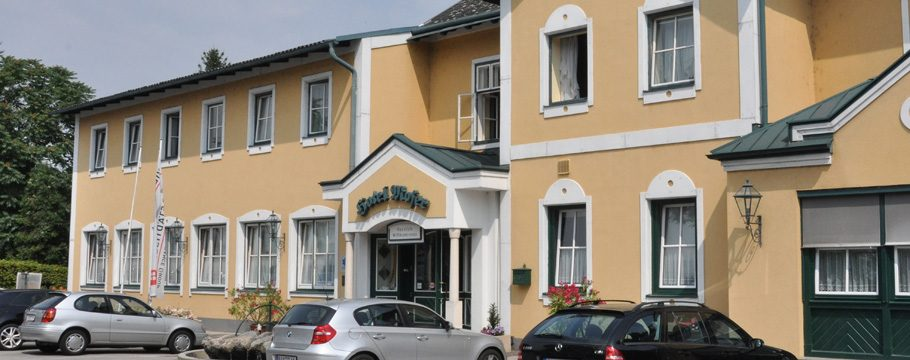
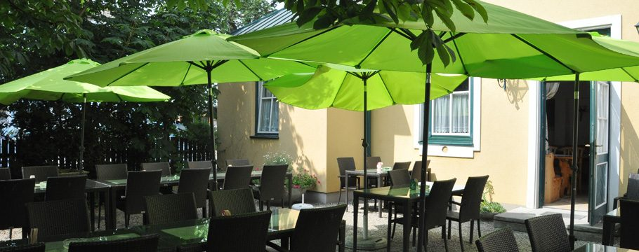
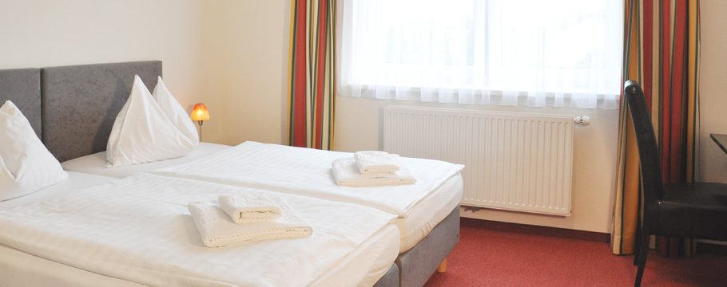
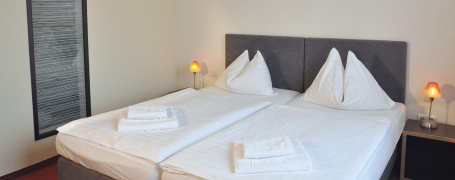

Das Moderne
Neue, modern eingerichtete Zimmer mit Fernseher, Internet-Anschluss, Dusche & WC und Fön.
€ 108,– / € 77,–
Unverbindliche Gestaltungs-Vorschau · keine offizielle Website des Hotel Moser-Reiter · erstellt von AVOS Solutions
38 Zimmer, ein Restaurant mit gut bürgerlicher Küche, Räume für Feiern und Seminare und ein Catering von 20 bis 1000 Personen — direkt am Bahnhofsplatz, ganzjährig geöffnet.

Das Hotel Moser-Reiter liegt am Bahnhofsplatz von Pöchlarn — dem Ausgangspunkt für Wachau, Stift Melk und Donauradweg. 38 liebevoll eingerichtete Zimmer, jedes mit Bad & WC, Fön, SAT-TV, Radio, Telefon und gratis Internet-Zugang.
Dazu ein Restaurant im Landstil, Räume für Feiern und Seminare, ein Catering-Service für 20 bis 1000 Personen und ein absperrbarer Fahrradabstellraum für alle, die mit dem Rad kommen.

Alle Preise pro Zimmer und Nacht inklusive Frühstück. Unsere Preise sind saisonabhängig und richten sich nach Nachfrage, Auslastung und Verfügbarkeit — daher können die angegebenen Preise variieren. Halbpension auf Anfrage möglich.
Neue, modern eingerichtete Zimmer mit Fernseher, Internet-Anschluss, Dusche & WC und Fön.
Rustikaler Stil zur ruhigen Gartenseite — Dusche & WC, Fön, Fernseher und WLAN.
Bahnseitig gelegen, komfortabel eingerichtet — Dusche & WC, Fön, Fernseher und WLAN.


In unserem gemütlichen, im Landstil eingerichteten Restaurant spüren Sie die Gastfreundschaft von Moser-Reiter: gut bürgerliche Küche, lokale Spezialitäten aus der Umgebung der Wachau, saisonale Köstlichkeiten — dazu eine breite Auswahl an Rot- und Weißweinen.
Das Tagesmenü gibt es täglich von Montag bis Sonntag: € 9,60 bei Abholung, € 13,– bei Lieferung, zwischen 11 und 20 Uhr, solange der Vorrat reicht.
Sonntagsbuffets jeweils 11.30–14.30 Uhr. Tischreservierung erbeten: 02757 / 2448 oder 2444.


Ob Geburtstag, Taufe, Jubiläum oder Hochzeit — wir bieten die optimalen Räumlichkeiten für große und kleine Feiern. So können Sie sich ganz um Ihre Gäste kümmern.
Rundum-Catering mit nationalen und internationalen Köstlichkeiten, ausgewählten Weinen und Getränken — inklusive Räumlichkeiten, eigenem Festzelt und Equipment.
Seminarräume im Haus, Verpflegung aus der eigenen Küche und Zimmer für Ihre Teilnehmenden — alles an einem Ort, direkt beim Bahnhof.
Donauradweg, Wachau Radweg, 3-Täler-Radweg, Schallaburg, Ötscherland, Waldviertel: Vom Bahnhofsplatz starten Sie direkt in die Region. Dazu Wanderungen und Spaziergänge rund um Pöchlarn, Ausflugsveranstaltungen mit dem Bus und Sehenswürdigkeiten von Stift Melk bis zur Basilika Maria Taferl.
Unsere Radpauschalen starten bei € 62,– pro Person im Doppelzimmer.

Zimmer, Tisch, Feier oder Catering: Ihre Anfrage geht ohne Umweg an die Rezeption — Antwort persönlich, meist noch am selben Tag.